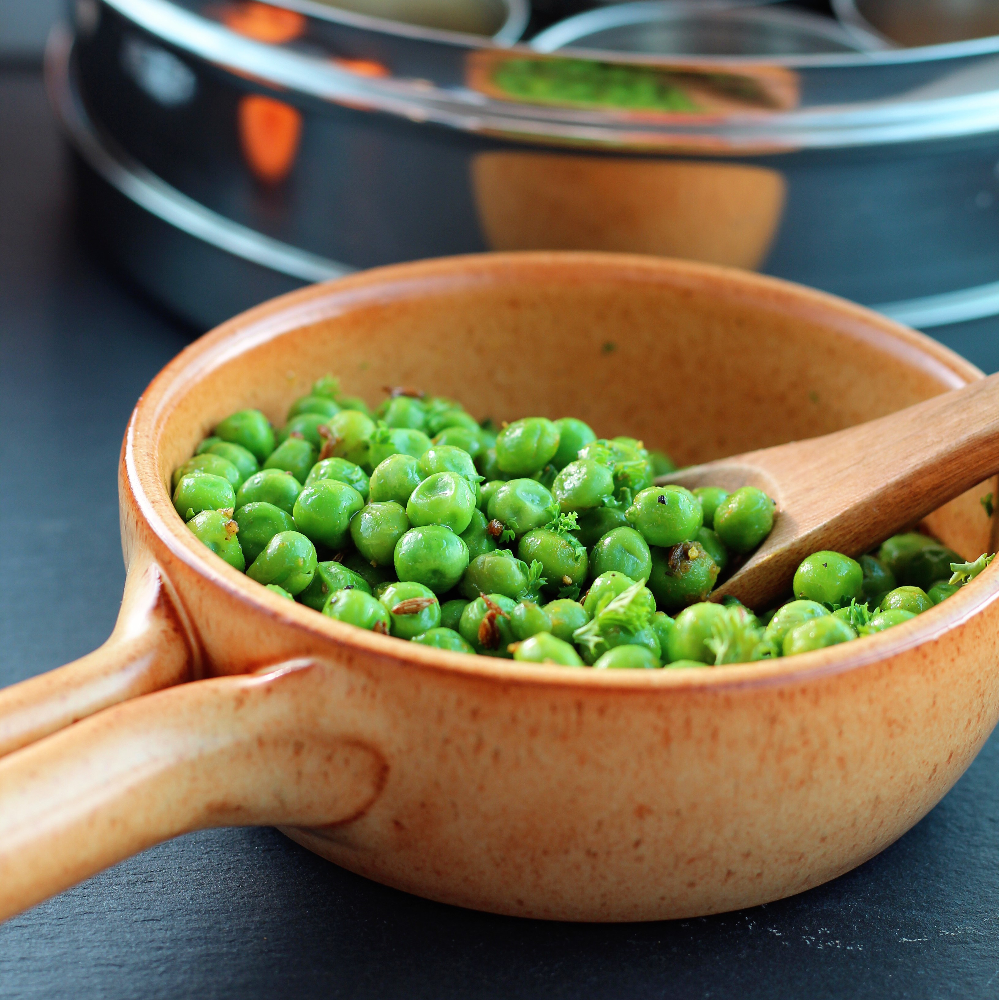

Peas

Here is a recipe for Peas
Ingredients
- 1 (16 ounce) package frozen peas
- 1 tablespoon vegetable oil /li>
- 1 teaspoon cumin seeds
- 1 teaspoon ground cumin
- salt to taste
- ½ teaspoon dried mango powder (amchoor)
- 1 tablespoon chopped fresh cilantro
Steps
- Place peas in a bowl and cover with water; soak for 20 minutes. Drain.
- Heat oil in a frying pan over medium heat. Add cumin seeds and cook until they start to crackle, about 1 minute. Add peas, cumin powder, and salt. Reduce heat and cover pan. Cook, stirring occasionally, until peas are tender and hot throughout, about 10 minutes.
- Remove frying pan from heat. Stir in dried mango powder. Mix cilantro into peas and serve hot.